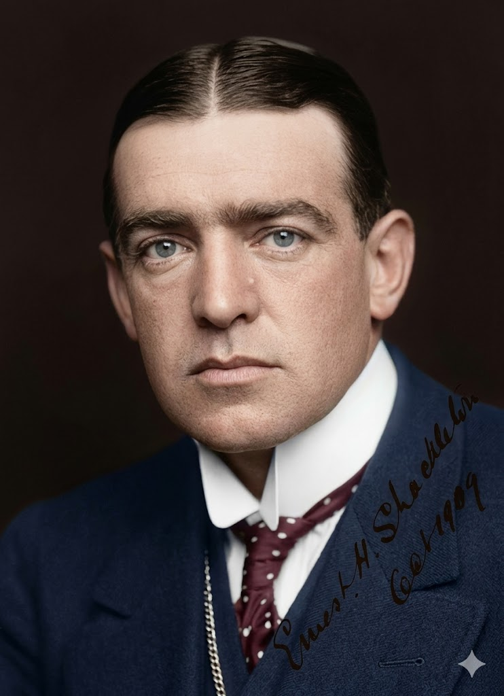

סר ארנסט שקלטון
| המשלחת הטראנס-אנטארקטית: 1914 – 1917
מנהיגות בקצה העולם ומסע ההישרדות של ה"אנדיורנס"

לחץ על התמונה להגדלה
Ernest Shackleton | Source: Wikimedia Commons | License: Public Domain
ניתוח אטימולוגי של השם המלא
שם פרטי: ארנסט (Ernest)
השם "ארנסט" הוא שם ממוצא גרמאני עתיק שהפך לפופולרי מאוד באנגליה הויקטוריאנית.
מקור בלשני: נגזר מהמילה הגרמאנית העתיקה eornost שמשמעותה "רציני", "נחרץ", או "נמרץ" (Vigor, Seriousness).
סמליות בחייו: השם "ארנסט" קלע בול לאישיותו. שקלטון היה ידוע כאדם נחרץ בצורה יוצאת דופן (Tenacious). כשהספינה שלו נמחצה על ידי הקרח והמטרה הגיאוגרפית אבדה, הרצינות והנחרצות שלו הופנו כלפי מטרה אחת בלבד: להציל את חייהם של 28 פקודיו. הנחישות שלו לא נשברה גם ברגעים האפלים ביותר על הקרחון.
שם משפחה: שקלטון (Shackleton)
זהו שם משפחה אנגלי-יורקשיירי (מצפון אנגליה) ממקור טופונימי (גאוגרפי).
מקור בלשני: השם מורכב מהמילים באנגלית עתיקה Scacel (שפירושה "לשון יבשה", "פיסת אדמה בולטת" או "כבל/שלשלת") ו-Tūn (עיירה או חווה). הפירוש המשוער הוא "היישוב על לשון היבשה".
הקשר למורשת: משפחתו של שקלטון מקורה בצפון אנגליה, אך עברה לאירלנד. הוא ספג את ה"קסם והחלקלקות" האירית שסייעו לו לגייס כספים, אך גם את הקשיחות של הימאים הבריטים. שם המשפחה הזה הפך בסופו של דבר למילה נרדפת עולמית למנהיגות במשבר (Crisis Leadership), ונלמד עד היום בבתי ספר למנהל עסקים.
ילדות ורקע מוקדם: מאירלנד אל הים הפתוח
ארנסט שקלטון נולד ב-1874 במחוז קילדייר שבאירלנד למשפחה אנגלו-אירית ממעמד הביניים. הוא היה השני מתוך עשרה ילדים (והבן הבכור).
אידאולוגיה, מניעים ומימון: הפילוסופיה של "סיבולת"
בניגוד לאמונדסן שחיפש יעילות קרה, או לליווינגסטון שחיפש להושיע נפשות, המניע של שקלטון היה מורכב מתערובת של רדיפת תהילה אישית, תחרות פסיכולוגית עמוקה, ורצון עז להחזיר את הגאווה לבריטניה.
האובססיה לקוטב והבחירה בחיים (1909)
ב-1907 הוא חזר כמפקד "משלחת נמרוד". ב-1909 הגיע למרחק של 156 ק"מ בלבד מהקוטב (שיא עולמי דאז), אך הבין שאם ימשיך – אין לו מספיק מזון לחזור בחיים. הוא קיבל החלטה שקבעה את אישיותו: הוא בחר בחיי אנשיו על פני התהילה, וחזר. לאשתו אמר: "חשבתי שעדיף לך חמור חי מאשר אריה מת".המצאה מחדש של האתגר: החצייה הטראנס-אנטארקטית
כשאמונדסן כבש את הקוטב ב-1911, שקלטון הרגיש ש"הפרס" אבד לבריטניה. לכן, הוא המציא אתגר חדש וקשה פי כמה: לחצות את יבשת אנטארקטיקה כולה ברגל, מים אל ים, למרחק של כ-2,900 ק"מ.מסע גיוס ההון ושלושת התורמים
כיצד אדם שהיה נתון בחובות תמידיים מימן משלחת של מיליונים? דרך כריזמה, מסחור ומכירות. הוא סחט מענק קטן מהממשלה, מכר מראש את "זכויות היוצרים" וההפקה הקולנועית של המשלחת, ומכר חסויות על כלבים לבתי ספר."שלושת הגדולים": את עיקר הכסף גייס מ-3 פילנתרופים שאותם הקסים:
- סר ג'יימס קיירד: איל הון מסקוטלנד שרשם צ'ק עצום של 24,000 ליש"ט במקום.
- פרנק דאדלי דוקר: איש עסקים שתרם 10,000 ליש"ט.
- ג'אנט סטאנקומב-ווילס: יורשת אימפריית טבק שסגרה את חובותיו האחרונים.
הערה היסטורית: כאשר האנדיורנס טבעה, שקלטון קרא לשלוש סירות ההצלה הקטנות על שם תורמים אלו.
המשלחת הטראנס-אנטארקטית: מאסון למיתוס (1914-1917)
אפוס ההישרדות הגדול ביותר של עידן התגליות. אף לא אדם אחד מהצוות המקורי של הספינה נהרג.
1. הכליאה בקרח (1915)
באוגוסט 1914 יצאו 28 אנשי צוות על ה"אנדיורנס". בתחילת 1915 הספינה נתקעה לחלוטין בתוך "ים ודל" (Weddell Sea) בשדה קרח צפוף. הקרח לא נפתח. הספינה נותרה כלואה 10 חודשים. שקלטון, בהבנה פסיכולוגית מזהירה, שמר על שגרת יום: ימי הולדת, כדורגל על הקרח ומרוצי כלבים כדי למנוע דיכאון.
2. מותה של ה"אנדיורנס" ומחנה הקרח
בסוף אוקטובר 1915, לחץ הקרח בתנועה מעך את הספינה. היא רוסקה וצללה. שקלטון כינס את אנשיו על משטח קרח ואמר ברוגע: "הספינה ואספקתנו אבדו, אז נחזור הביתה". הם חיו על גושי קרח צפים כ-5 חודשים נוספים, ניזונים מכלבי ים.
3. הבריחה לאי הפיל (Elephant Island)
באפריל 1916, הקרח החל להישבר. הם השיקו את 3 סירות ההצלה הפתוחות ושטו בתנאים מחרידים 7 ימים עד שנחתו על אי הפיל – חלקת אדמה קפואה מחוץ לנתיבי השייט. היו נידונים למוות מרעב אלמלא הזעיקו עזרה.
4. מסע ההצלה הבלתי אפשרי בסירת ה"ג'יימס קיירד"
שקלטון בחר את סירת ה"ג'יימס קיירד" (6.8 מטרים), לקח 5 אנשים (ביניהם הנווט הגאון וורסלי), ויצא למסע התאבדותי. המטרה: תחנת הלווייתנים בג'ורג'יה הדרומית – מרחק של 1,300 קילומטרים בים האלים בעולם. לאחר 16 ימי מאבק בסופות הוריקן וגלי ענק (18 מטר), הם נחתו על האי.
5. חציית הרי ג'ורג'יה הדרומית וההצלה
עקב סערה הם נחתו בצד הלא נכון של האי והסירה נהרסה. בייאוש, שקלטון, וורסלי וקריאן החליטו לחצות את רכס ההרים הקפוא של ג'ורג'יה הדרומית ברגל (מעולם לא נחצה קודם לכן). ללא אוהל, עם ברגים בסוליות ומעדר שלפים, הם צעדו 36 שעות ללא שינה עד שהגיעו לתחנת לווייתנים. לאחר 4 חודשים של ניסיונות, שקלטון חזר לאי הפיל עם ספינת חילוץ. כל 22 האנשים שהשאיר מאחור – שרדו.
אקולוגיה של הישרדות: לחיות על הקרחון
שקלטון ואנשיו שרדו בעיקר בזכות הסתגלות אקולוגית חסרת רחמים לסביבה:
- דיאטת בשר טרי (צפדינה): בניגוד לסקוט, שקלטון לא הסתמך על שימורים. הצוות צד ואכל כמויות עצומות של פינגווינים וכלבי ים. הבשר הטרי סיפק להם ויטמין C שמנע לחלוטין את מחלת הצפדינה.
- הסקה בשומן כלבי ים (Blubber): הבעיה הגדולה לא הייתה רק אוכל, אלא כפור. הם השתמשו בשכבת השומן העבה של כלבי הים כדלק למדורות ולתנורי הבישול, שאפשרה להם להמס שלג למי שתייה.
- אובדן כלבי המזחלות: החלטה קשה מנשוא. בניגוד לאמונדסן שתכנן זאת מראש, צוות האנדיורנס פיתח קשר רגשי עמוק עם 69 כלבי ההאסקי שלהם. כשהמזון אזל והכלבים הפכו לנטל, שקלטון הורה, בלב כבד, על המתת חסד. הכלבים נורו למוות, וחלקם נאכלו בשבועות הרעב האחרונים.
- תצפיות זואולוגיות: ביולוג המשלחת, רוברט קלארק, תיעד את נדידת הפינגווינים הקיסריים בחורף ואת התנהגות הציד האכזרית של הלווייתן הקטלן (אורקה), שלעתים התנגש בקרח מלמטה כדי להפיל כלבי ים למים.
מקורות וביבליוגרפיה (אימות מחקר אקדמי)
- "South" (Ernest Shackleton, 1919): ספרו המקורי של שקלטון. דיווח הגוף-הראשון המפורט ביותר על ריסוק האנדיורנס, מסע גיוס התרומות, הניהול המורלי ומסע הגבורה.
- "Endurance: Shackleton's Incredible Voyage" (Alfred Lansing, 1959): התיעוד המקיף והמדויק ביותר של המסע. לנסינג ראיין ניצולים וביסס את הספר על היומנים האישיים של הצוות. ספר חובה ללימוד על מנהיגותו של שקלטון.
- "Shackleton's Way" (Margot Morrell and Stephanie Capparell, 2001): ספר המנתח אקדמית את שיטות הניהול, גיוס המימון (תורמים כדוגמת קיירד ודוקר), הפסיכולוגיה הארגונית והאינטליגנציה הרגשית במשבר קיצוני.
- יומני פרנק וורסלי (Frank Worsley): יומניו של הקפטן והנווט, המוכיחים את חוסר הסבירות לביצוע מסע הניווט המדויק בסירת ההצלה מהאי הפיל לג'ורג'יה הדרומית תחת סופות וראות אפסית.